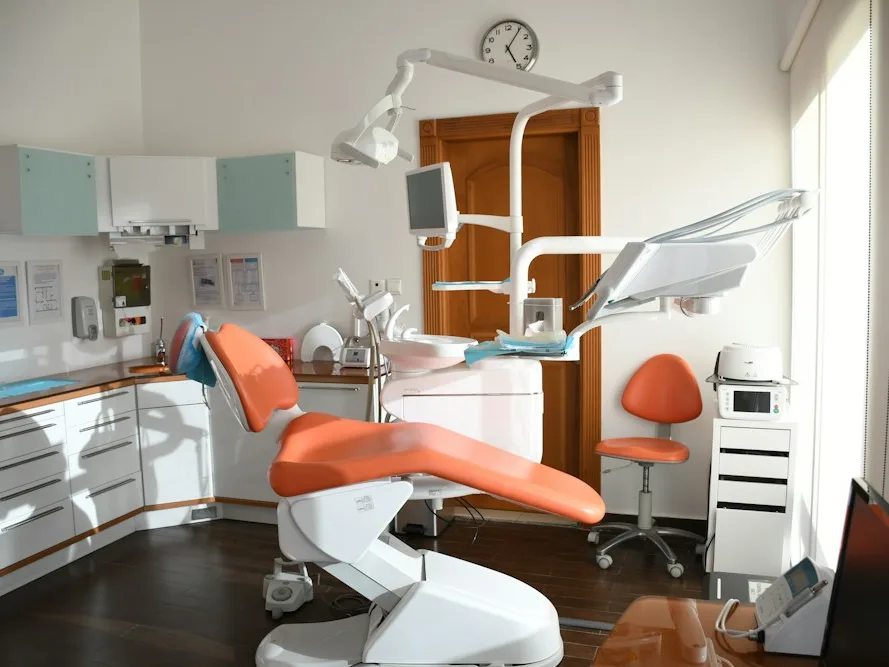

Rehabilitación Oral
Reconstrucción integral de la función masticatoria, oclusión y estética dental mediante coronas cerámicas, incrustaciones biomiméticas y prótesis de alta biocompatibilidad.
- Recuperación oclusal
- Cerámicas libres de metal
- Ajuste milimétrico digital
- Confort masticatorio total
Detalles del protocolo clínico
Diagnóstico 3D: Escaneo intraoral digital sin pastas y fotografía diagnóstica.
Biomateriales: Cerámicas y zirconio biocompatibles sin metales.
Confort: Procedimientos indoloros bajo anestesia computarizada.